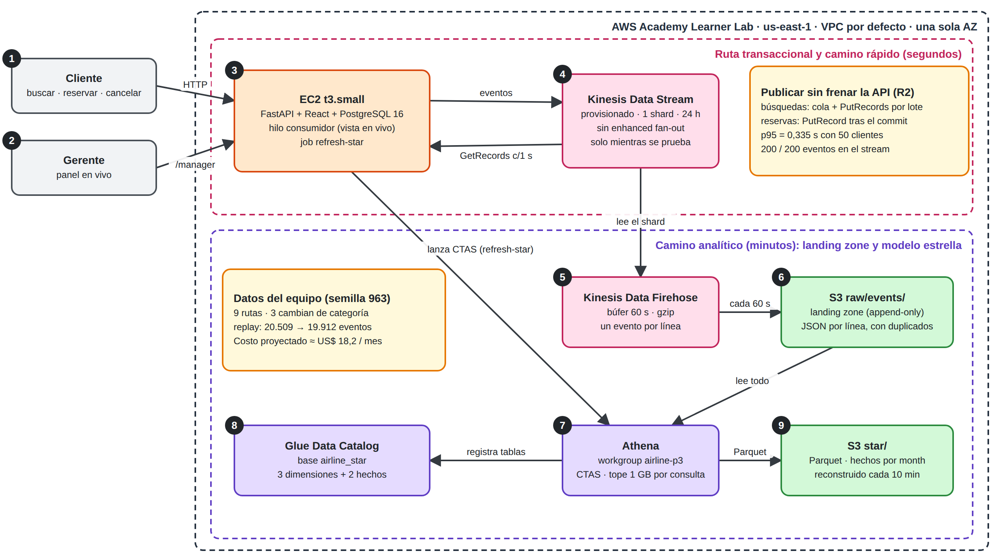
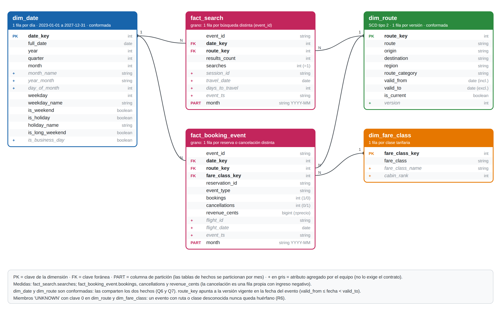

| Integrantes | Jefferson Gutiérrez Tovar Ángel Santiago Díaz Rueda |
| Semilla del equipo | 963 |
| Plataforma | AWS Academy Learner Lab (región us-east-1) |
| Repositorio | github.com/asantiagodiaz/BD_parcial1, carpeta parcial3/ |
| Resultado del harness | 70 / 70 (18 de noviembre de 2026) |
En el segundo parcial nuestro sistema analizaba el historial de reservas por lotes: EMR limpiaba dos millones de filas una vez al mes y Athena respondía la ocupación. En este parcial el sistema también reacciona a lo que pasa en el momento. Cada búsqueda, reserva y cancelación se publica como un evento en Amazon Kinesis, y esos eventos alimentan dos caminos con necesidades muy distintas:
GET /analytics/live).La aerolínea quiere saber, minuto a minuto, cuánta gente busca y reserva, y además analizar la historia por fecha, ruta y clase tarifaria. Este documento explica cómo construimos ambos caminos, por qué elegimos cada pieza y cuánto cuesta. El sistema pasó las 29 pruebas automáticas del harness: 70 de 70 puntos.
El enunciado define 12 requisitos verificables. El harness los comprueba contra el sistema desplegado: llama a la API, lee el stream, inyecta en nuestro stream unos 20.000 eventos "sucios" y consulta las tablas en Athena.
| Req. | Qué exige | Pts |
|---|---|---|
| R1 | Cada búsqueda, reserva y cancelación publica exactamente un evento válido, con la clave de partición correcta y sin datos personales | 7 |
| R2 | Bajo una ráfaga de 200 búsquedas (50 a la vez) no se pierde ningún evento y la API no se frena (p95 ≤ 1 s) | 6 |
| R3 | GET /analytics/live refleja eventos nuevos en menos de 10 s y cuenta por la hora del evento | 7 |
| R4 | Todo evento llega a la landing zone en S3 en menos de 5 minutos | 4 |
| R5 | Las tablas de la estrella existen en Glue con columnas y tipos del contrato, en Parquet; dim_date enriquecida; fact_search particionada por mes | 7 |
| R6 | Integridad: claves únicas, sin hechos huérfanos, una fila por evento | 5 |
| R7 | Las preguntas de negocio Q1–Q4 y Q6–Q8 dan los números correctos | 11 |
| R8 | Duplicados eliminados, eventos tardíos en su fecha y refresco en menos de 15 minutos | 6 |
| R9 | dim_route es de tipo 2 y los hechos usan la versión vigente en la fecha del evento (Q5) | 8 |
| R10 | Filtrar un mes no escanea todo (≤ 60 %) y el workgroup limita cada consulta a 1 GB | 4 |
| R11 | Stream mínimo: provisionado, un shard, retención ≤ 24 h, sin enhanced fan-out | 3 |
| R12 | Proyección de costos bajo 1,5 veces la del profesor y bajo 50 dólares | 2 |
Antes de desplegar comprobamos todo lo posible en nuestro computador. Corrimos los tests R1–R3 del harness contra la API local, con Kinesis simulado (moto). Verificamos el SQL de la estrella en DuckDB, traducido automáticamente desde el dialecto de Athena, contra el "oráculo" del harness (la función que calcula las respuestas esperadas). Así, la primera corrida completa en AWS ya dio 70 de 70.

Hay una sola máquina virtual (EC2 t3.small) que ejecuta la API, el frontend, la base de datos PostgreSQL y dos tareas en segundo plano: el consumidor del stream y el job que reconstruye la estrella. Fuera de la máquina están los servicios gestionados:
| Pieza | Para qué la usamos | Cuándo existe |
|---|---|---|
| EC2 t3.small + PostgreSQL 16 | API transaccional (vuelos, reservas sin sobreventa), vista en vivo, lanzador del ETL | Siempre |
| Kinesis Data Stream | Bus de eventos: 1 shard provisionado, retención de 24 h | Solo mientras probamos |
| Kinesis Data Firehose | Copia el stream a S3 cada 60 s, comprimido, un evento por línea | Solo mientras probamos |
| S3 | raw/events/ (landing zone), ref/ (archivos de referencia), star/ (Parquet), athena-results/ | Siempre |
| Athena | Reconstruye la estrella con CTAS y responde las preguntas de negocio | Siempre (sin costo fijo) |
| Glue Data Catalog | Esquema y particiones de las tablas de airline_star | Siempre (sin costo fijo) |
Todo evento es un JSON con event_id (UUID), event_type, event_ts (UTC, el momento en que ocurrió) y schema_version = 1. Además lleva los campos de su tipo:
| Tipo | Campos propios | Clave de partición | Cómo se publica |
|---|---|---|---|
search_performed | session_id, origin, destination, travel_date, results_count | session_id | Asíncrono: cola en memoria y lotes con PutRecords |
reservation_created | reservation_id, flight_id, route, flight_date, fare_class, price_cents | flight_id | Síncrono, con PutRecord después del commit |
reservation_cancelled | los mismos que la reserva | flight_id | Síncrono, después del commit |
Ningún evento lleva el nombre del pasajero. El session_id sale de la cabecera X-Session-Id (el frontend genera un identificador aleatorio por pestaña); si no viene, la API genera uno.
Repartir las búsquedas por sesión distribuiría la carga si hubiera más shards. Agrupar las reservas por vuelo hace que la creación y la cancelación de una misma reserva lleguen en orden al mismo shard.
POST /reservations/{id}/cancel: un UPDATE condicional (WHERE status <> 'CANCELLED') marca la reserva y, en la misma transacción, libera el asiento. Si dos cancelaciones llegan a la vez, solo una gana; la otra recibe 409. Una reserva inexistente da 404.GET /analytics/live?window=5: responde desde memoria con lo que el consumidor leyó del stream. No consulta la base ni Athena.POST /admin/refresh-star y GET /admin/refresh-status: lanzan y siguen el job que reconstruye la estrella.UPDATE atómico que impide la sobreventa. Quitamos /analytics/occupancy, porque el contrato del parcial 3 no lo pide y sus tablas no existen en esta base.Un hilo dentro del mismo proceso de la API lee el único shard cada segundo con GetRecords. Guarda en memoria los eventos de la última hora, indexados por event_id, y cuenta los que tienen su event_ts dentro de la ventana pedida.
Tres detalles hacen que el resultado sea correcto:
event_id: un reintento del productor no se cuenta dos veces.AT_TIMESTAMP), así un reinicio de la API no deja el panel en cero.Leemos cada 1 s y no más rápido porque un shard admite cinco lecturas por segundo compartidas entre todos los lectores: Firehose lee una vez por segundo y el harness, mientras verifica, cuatro.
Corremos uvicorn con un solo worker porque los contadores viven en ese proceso. El panel gerencial (/manager) muestra estos contadores, se actualiza cada 3 s y permite lanzar el refresco de la estrella.

| Tabla de hechos | Grano | Medidas | Partición |
|---|---|---|---|
fact_search | Una fila por evento de búsqueda distinto | searches (=1), results_count, days_to_travel | month (YYYY-MM) |
fact_booking_event | Una fila por evento de reserva distinto: una creación o una cancelación | bookings (1/0), cancellations (0/1), revenue_cents (+precio / −precio) | month (no la exige el contrato) |
La cancelación es una fila propia con ingreso negativo, no una modificación de la reserva original. Así el hecho nunca se actualiza, igual que la landing zone, y el ingreso neto es un simple SUM(revenue_cents), con cada reverso en el día en que ocurrió.
| Dimensión | Grano | Atributos que agregamos y por qué |
|---|---|---|
dim_date (conformada) | Un día, de 2023-01-01 a 2027-12-31 (1.826 filas) | month_name y year_month para los reportes y para cruzar con la partición; day_of_month; is_business_day, para comparar días hábiles con festivos y fines de semana |
dim_route (conformada, SCD 2) | Una versión de una ruta (13 filas: 9 rutas, 3 con dos versiones, y el miembro desconocido) | version, para auditar los cambios; miembro route_key = 0 "UNKNOWN" para rutas que no están en la referencia |
dim_fare_class | Una clase tarifaria | fare_class_name y cabin_rank, para ordenar ECONOMY antes que BUSINESS; miembro 0 "UNKNOWN" |
En los hechos guardamos además atributos degenerados que no son personales: session_id, reservation_id, flight_id, las fechas de viaje y event_ts. Permiten, por ejemplo, medir la anticipación de una búsqueda o rastrear un evento hasta la landing zone.
dim_date y dim_route son conformadas: las comparten los dos hechos con las mismas claves. Eso es lo que permite comparar búsquedas con reservas (Q6 y Q7).
| Pregunta | Hecho(s) | Medida | dim_date | dim_route | dim_fare_class |
|---|---|---|---|---|---|
| Q1 Ingreso neto por mes y clase | booking | SUM(revenue_cents) | year, month | fare_class | |
| Q2 Reservas, cancelaciones y tasa por ruta | booking | SUM(bookings), SUM(cancellations) | route | ||
| Q3 Reservas por día de la semana | booking | SUM(bookings) | weekday_name | ||
| Q4 Diez rutas con más ingreso neto | booking | SUM(revenue_cents) | route | ||
| Q5 Ingreso por mes y categoría vigente | booking | SUM(revenue_cents) | year, month | route_category (versión) | |
| Q6 Conversión por ruta | search + booking | COUNT(searches), SUM(bookings) | route (conformada) | ||
| Q7 Festivos frente a otros días | search + booking | COUNT(searches), SUM(bookings) | is_holiday (conformada) | ||
| Q8 Reservas en puentes | booking | SUM(bookings) | is_long_weekend |
Festivos y puentes. Los festivos salen de holidays_ref.csv (91 festivos colombianos de 2023 a 2027). Un día pertenece a un puente si es un lunes o viernes festivo, o si es el sábado o el domingo de un fin de semana cuyo viernes anterior o lunes siguiente es festivo. En SQL lo resolvemos uniendo cada día con los festivos desplazados entre −2 y +2 días.
Cada decisión cita el requisito que la motiva y los pilares del Well-Architected Framework: excelencia operativa, seguridad, confiabilidad, eficiencia de rendimiento, optimización de costos y sostenibilidad.
Las búsquedas encajan bien en Kinesis porque son muchas, cada una vale poco y solo interesan agregadas. Perder una no cambia ninguna decisión; hacer esperar al cliente sí hace daño. Por eso la API solo las encola en memoria y un hilo las envía en lotes de hasta 500 con PutRecords.
Si un lote falla a medias, reintenta solo los registros que fallaron (así no duplica los que ya entraron), y si la cola se llena, descarta la búsqueda. En la ráfaga de R2 medimos un p95 de 0,335 s y llegaron 200 eventos de 200.
Las reservas son delicadas porque son transacciones de negocio: perder una descuadra los ingresos. Las publicamos después del commit, con PutRecord síncrono y cinco reintentos, para no publicar nunca una reserva que no quedó guardada. Aun así queda un hueco: si el proceso muere entre el commit y el envío, el evento se pierde.
En producción lo cerraríamos con el patrón transactional outbox. En la misma transacción que guarda la reserva se inserta una fila en una tabla outbox. Un publicador aparte envía las filas pendientes a Kinesis y las marca como publicadas, y si se cae, reenvía las que no alcanzó a marcar, con el mismo event_id.
Eso da una entrega "al menos una vez", y los duplicados se eliminan después por event_id. Una alternativa equivalente es capturar los cambios del registro de transacciones de PostgreSQL (CDC, por ejemplo con Debezium).
No entran al stream el nombre del pasajero ni otros datos personales, las consultas de una reserva (no son hechos de negocio) ni la creación de vuelos.
Requisitos: R1, R2. Pilares: confiabilidad (sin perder reservas), eficiencia de rendimiento (la búsqueda no espera), seguridad (sin datos personales).
La vista en vivo lee el stream y no Athena porque R3 pide reflejar un evento en menos de 10 s. Athena lee la landing zone, que llega con el retraso del búfer de Firehose (unos 60 s), tarda segundos por consulta y cobra un mínimo de 10 MB por consulta. Un panel que consultara cada 3 s serían 28.800 consultas al día. El consumidor que corre dentro de la API no tiene costo adicional y mostró los cambios en 1,7 s.
La estrella se refresca cada pocos minutos y no por evento porque Parquet sobre S3 está pensado para lecturas analíticas grandes, no para muchas escrituras pequeñas. Si la actualizáramos por evento:
INSERT en Athena factura al menos 10 MB y tarda segundos: 20.000 inserts costarían cerca de un dólar y horas de cola;Con micro-lotes cada refresco escribe pocos archivos grandes y resuelve de una vez los duplicados y los eventos tardíos. Hay un temporizador cada 10 minutos (que no hace nada si no llegaron datos nuevos) y la opción de refrescar bajo demanda.
Requisitos: R3, R8. Pilares: eficiencia de rendimiento, optimización de costos, sostenibilidad.
Usamos Kinesis Data Firehose con el stream como fuente: búfer de 60 s o 5 MB, compresión gzip y el procesador AppendDelimiterToRecord, que agrega un salto de línea a cada registro. Lo preferimos a un consumidor propio porque es gestionado: reintenta, recuerda por dónde va leyendo el shard y separa los errores en raw/errors/.
Un consumidor propio costaría cero, pero si la EC2 se cayera dejaría de llenarse justo la copia durable de los eventos. Con Firehose, el camino analítico no depende de la API.
El delimitador es imprescindible. El harness escribe sus eventos en JSON compacto sin salto de línea, y sin él Firehose los pegaría uno tras otro (}{). La SerDe JSON de Athena, que lee un objeto por línea, no podría leerlos.
Latencia: el harness encontró los 19.912 eventos en S3 a los 68 s (límite: 5 minutos). Costo: 0,029 dólares por GB ingerido, con cada registro redondeado a 5 KB, unos 0,05 dólares al mes. Firehose lee el shard como un consumidor estándar, así que no suma consumidores enhanced fan-out (R11).
Requisitos: R4, R11. Pilares: confiabilidad, excelencia operativa (sin código propio que mantener), optimización de costos.
Partimos de las preguntas de negocio. Cada una necesita una medida (ingreso, reservas, cancelaciones o búsquedas) y uno o varios ejes de análisis (fecha, ruta, clase). La matriz bus de la sección 5.3 muestra qué hecho y qué dimensiones usa cada pregunta. De ahí salen las decisiones: dos hechos con granos distintos (búsqueda y evento de reserva), porque una búsqueda no tiene precio ni clase; dimensiones de fecha y de ruta compartidas, para poder comparar los dos hechos (conversión en Q6, festivos en Q7); y una dimensión de fecha enriquecida, porque Q3, Q7 y Q8 no se pueden responder con una lista plana de fechas. Los granos, los atributos agregados y su motivo están en las secciones 5.1 y 5.2.
Requisitos: R5, R6, R7. Pilares: eficiencia de rendimiento (consultas con pocos joins y particiones por mes), excelencia operativa.
Entre la landing zone y la estrella hay una transformación: deduplicar por event_id, asignar la fecha por event_ts, resolver las claves sustitutas y la versión de ruta vigente, escribir Parquet y registrar particiones. El replay del harness son 20.509 registros (unos 5 MB de JSON, menos de 1 MB en gzip). Comparamos tres alternativas:
| Criterio | Athena CTAS programado (elegido) | Lambda + DuckDB | Glue job (Spark) |
|---|---|---|---|
| Costo por corrida | 8 consultas × 10 MB mínimo = 80 MB → 0,0004 USD | ~60 s × 2 GB = 120 GB-s → 0,002 USD | 2 DPU × ~2 min con arranque × 0,44 → 0,03 USD |
| Costo al mes (360 corridas) | ~0,15 USD | ~0,72 USD | ~10,60 USD |
| Arranque frente al límite de 15 min | Sin arranque; la corrida completa tardó 31 s | 1–3 s en frío, pero tope duro de 15 min por invocación | ~1 min de arranque |
| Crecimiento del volumen | Sin servidores; el costo crece con los datos escaneados | Tope de 10 GB de memoria y 15 min | Escala agregando DPU |
| Operación | Solo SQL; Glue registra las particiones solo; sin paquetes ni roles | Empaquetar DuckDB; registrar particiones a mano | Script Spark, configuración del job y de los DPU |
| Idempotencia | Por diseño: reconstrucción completa a un prefijo nuevo | Hay que programarla | Hay que programarla |
Elegimos Athena CTAS, lanzado por el propio backend. Es la opción más barata (unas 70 veces menos que Glue), no tiene arranque y su idempotencia es estructural. Cada corrida borra la tabla del catálogo, la crea de nuevo con CTAS en star/<tabla>/<run_id>/ y después elimina la carpeta anterior. Nunca hay un INSERT sobre lo ya cargado, así que repetir el mismo lote produce exactamente las mismas filas.
Si llega un pedido de refresco mientras otro corre, el job agenda otra corrida que empieza al terminar la actual. Así nadie recibe un "terminado" de una corrida que empezó antes de que llegaran sus datos.
Cuándo la cambiaríamos. La reconstrucción completa relee toda la historia en cada corrida. Con 66.000 eventos al mes, un año ocupa unos 20 MB en gzip, lo que sigue siendo trivial. Si el volumen llegara a millones de eventos diarios, cada reconstrucción leería decenas de GB y se acercaría a los 15 minutos.
En ese punto pasaríamos a un proceso incremental: procesar solo las carpetas horarias nuevas de Firehose y deduplicar contra una ventana de días, o usar tablas Iceberg con MERGE. Si la transformación se volviera pesada, la moveríamos a Glue o EMR Serverless.
Requisitos: R8 (15 min, idempotencia), R5 (Parquet y particiones registradas). Pilares: optimización de costos, excelencia operativa, eficiencia de rendimiento.
Usamos tipo 2 para la categoría de la ruta porque Q5 pregunta por el ingreso con la categoría que la ruta tenía el día del evento. Con nuestra semilla, el 1 de febrero de 2025 cambian tres rutas: CTG-BOG pasa de TRUNK a REGIONAL, y CUC-SMR y ADZ-BAQ de REGIONAL a TRUNK.
La dimensión guarda una fila por versión, con valid_from (incluido), valid_to (excluido; 9999-12-31 en la vigente) e is_current. Las versiones se arman desde el historial con la función de ventana LEAD.
Una tipo 1 respondería mal porque sobrescribe la categoría. Todo el ingreso de enero de 2025 de CTG-BOG aparecería como REGIONAL aunque ese mes era TRUNK, y el de CUC-SMR y ADZ-BAQ como TRUNK aunque eran REGIONAL. Además, el reporte de un mes ya cerrado cambiaría cada vez que se recategoriza una ruta.
A un evento tardío le asignamos la versión por su fecha, no por la de llegada: el join es fecha_evento >= valid_from AND fecha_evento < valid_to. Un evento del 31 de enero que llega en marzo toma la versión de enero.
Requisito: R9. Pilares: confiabilidad (reportes históricos estables), excelencia operativa.
ROW_NUMBER() OVER (PARTITION BY event_id) = 1). El grano queda en una fila por event_id y el harness contó exactamente 17.000 búsquedas y 2.912 eventos de reserva. La vista en vivo también deduplica.event_ts, nunca de la carpeta de S3 donde Firehose guardó el archivo, que corresponde a la hora de llegada. Por eso el refresco lee la landing zone completa. En la vista en vivo, un evento viejo cae fuera de la ventana.event_ts con formato incorrecto y la SerDe ignora el JSON mal formado. Una ruta o una clase desconocidas van al miembro 0 de su dimensión, así que ningún hecho queda huérfano.Requisitos: R6, R8, R3. Pilares: confiabilidad, excelencia operativa.
Separamos lo que existe siempre de lo que existe solo mientras probamos. La EC2, el bucket, la base de Glue y el workgroup están siempre (Glue y Athena no tienen costo fijo). El stream y Firehose los crea crear_stream.sh y los borra borrar_stream.sh, porque el shard se cobra por cada hora que existe, aunque no reciba eventos.
Poner PostgreSQL en la misma EC2, en lugar de RDS, ahorra unos 14,70 dólares al mes. A cambio perdemos los respaldos gestionados, que en producción reemplazaríamos con snapshots del disco.
El bucket tiene reglas de ciclo de vida: los resultados de Athena y los errores de Firehose se borran a los 7 días, y los paquetes de código a los 30. La proyección de costos está en la sección 8.
Requisitos: R11, R12. Pilares: optimización de costos, sostenibilidad.
| Servicio | Para qué | Req. | Alternativa descartada y por qué |
|---|---|---|---|
| Kinesis Data Streams (provisionado, 1 shard) | Bus de eventos ordenado por clave, retención 24 h, varios lectores | R1–R4, R11 | Modo on-demand: más caro a este volumen. SQS: cada mensaje lo consume un solo lector, y aquí leen tres (vista en vivo, Firehose y el harness) |
| Kinesis Data Firehose | Entrega gestionada a S3 en menos de 5 minutos | R4 | Consumidor propio: ataría la landing zone a la disponibilidad de la API |
| S3 | Landing zone de solo escritura y estrella en Parquet | R4, R5 | — |
| Athena | ETL (CTAS) y preguntas de negocio | R5–R10 | Glue job o Lambda (sección 6.5) |
| Glue Data Catalog | Esquema y particiones | R5 | Crawlers: innecesarios, porque el CTAS ya define el esquema |
| EC2 + PostgreSQL | API, vista en vivo y lanzador del ETL | R1–R3, R8 | RDS: ~14,70 USD/mes más. Lambda + DynamoDB para la vista en vivo: más piezas que operar |
Todo se despliega con scripts de la carpeta parcial3/infra/. El Lab no permite crear roles IAM, así que la EC2 usa LabInstanceProfile y Firehose usa LabRole.
| Script | Qué hace |
|---|---|
deploy.sh | Crea el bucket con sus reglas de ciclo de vida, compila el frontend, sube el código y despliega el stack de CDK: EC2 con PostgreSQL local, base de Glue y workgroup airline-p3 con tope de 1 GB por consulta. No usa cdk bootstrap: genera la plantilla y la aplica con CloudFormation |
crear_stream.sh | Crea el stream (provisionado, 1 shard, 24 h) y Firehose hacia raw/events/ |
borrar_stream.sh | Borra Firehose y el stream al terminar cada sesión de pruebas |
actualizar_codigo.sh | Sube cambios de código a la EC2 por SSH y reinicia la API. Si redesplegáramos el stack, cambiaría el script de arranque de la EC2 y la instancia se reiniciaría con otra IP |
Orden de ejecución: deploy.sh, después crear_stream.sh, luego actualizar la URL en el config.yaml del harness y correr pytest, y al final borrar_stream.sh. Las credenciales del Lab las guardamos en un archivo del proyecto excluido de git y las activamos solo en la terminal de trabajo, sin tocar la configuración global de AWS del computador.
Archivo parcial3/cost_projection.yaml. Supuestos: unas 2.000 búsquedas y 200 reservas o cancelaciones al día (unos 66.000 eventos al mes), la API encendida todo el mes, el stream y Firehose unas 60 horas al mes, unas diez corridas del harness, y la estrella refrescada cada 10 minutos solo si llegaron datos nuevos. Precios on-demand de us-east-1.
| Servicio | Detalle | USD/mes |
|---|---|---|
| EC2 | 1 × t3.small (API, frontend, PostgreSQL y consumidor), 730 h | 15,18 |
| EBS | Disco gp3 de 20 GB | 1,60 |
| Kinesis | 1 shard solo mientras probamos (60 h × 0,015) más unidades de PUT | 0,92 |
| Kinesis Data Firehose | ~1,4 GB facturables (registros redondeados a 5 KB) × 0,029 | 0,05 |
| S3 | ~1 GB entre landing zone, estrella y resultados, más las escrituras de Firehose | 0,10 |
| Athena | ~360 refrescos × 8 consultas × 10 MB más ~3.000 consultas analíticas ≈ 60 GB × 5 USD/TB | 0,30 |
| Glue Data Catalog | 1 base y 9 tablas, dentro de la capa gratuita | 0,00 |
| Total (lo calcula el harness sumando las líneas) | 18,15 | |
El 92 % del costo es la EC2 y su disco, que son fijos. Los servicios de eventos y de análisis suman 1,37 dólares, porque solo consumen cuando hay trabajo (optimización de costos y sostenibilidad). Si el volumen de eventos se multiplicara por 10, el total subiría a unos 21 dólares: Firehose, S3 y Athena crecen en proporción, pero el shard aguanta hasta 1.000 registros por segundo y la EC2 no cambia. El mayor ahorro respecto al parcial 2 (31,89 dólares) viene de no usar RDS. El total queda muy por debajo del tope de 50 dólares; si la referencia del profesor usara RDS (unos 30 dólares), el límite de 1,5 veces quedaría en unos 45.
Ejecutamos el harness completo con pytest contra el sistema desplegado en AWS el 18 de noviembre de 2026. Pasaron las 29 pruebas en 3 minutos y 34 segundos y obtuvimos 70 de 70 puntos. El informe que genera el harness está en parcial3/report.md.
| Req. | Descripción | Puntos | Qué midió el harness |
|---|---|---|---|
| R1 | Un evento por acción | 7 / 7 | 30 eventos de búsqueda para 30 llamadas; 4 de reserva para 3 reservas y 1 cancelación; claves de partición correctas y sin datos personales |
| R2 | Ráfaga sin pérdida | 6 / 6 | 200 búsquedas con 50 clientes: p95 de 0,335 s (límite: 1 s); exactamente 200 eventos en el stream |
| R3 | Vista en vivo | 7 / 7 | Los aumentos (+10 búsquedas, +3 reservas, +1 cancelación) se vieron a los 1,7 s; tras inyectar 17.000 búsquedas antiguas la vista mostró 243, las generadas por los tests |
| R4 | Landing zone | 4 / 4 | 19.912 de 19.912 eventos distintos en S3 a los 68 s |
| R5 | Tablas del contrato | 7 / 7 | Columnas y tipos exactos, Parquet, partición month registrada; las 1.826 filas de dim_date coinciden con el calendario esperado |
| R6 | Integridad | 5 / 5 | Claves únicas, cero hechos huérfanos, una fila por event_id |
| R7 | Preguntas de negocio | 11 / 11 | Q1, Q2, Q3, Q4, Q6, Q7 y Q8 iguales a los valores esperados |
| R8 | Eventos sucios y refresco | 6 / 6 | Refresco terminado en 31 s; conteos por evento y por fecha exactos |
| R9 | SCD tipo 2 | 8 / 8 | Versiones, fechas de vigencia y banderas correctas; ingreso por categoría y mes (Q5) exacto |
| R10 | Poda y tope | 4 / 4 | Un mes escaneó 3.804 B frente a 11.210 B de todos los meses (34 %; límite 60 %); workgroup con tope de 1 GB |
| R11 | Stream mínimo | 3 / 3 | Provisionado, 1 shard, 24 h, 0 consumidores enhanced fan-out |
| R12 | Proyección de costos | 2 / 2 | 18,15 USD declarados; incluye Kinesis, S3 y Athena |
GET /health muestra cuántos registros leyó el consumidor y cuándo fue su última lectura, y el código está en backend/app/live.py: no hay ninguna consulta a Athena ni a la base en ese camino.DependsOn hacia ese rol, y CloudFormation la rechazó. En el parcial 2 no lo vimos porque ese campo se sobrescribía con la dependencia de la RDS. Lo eliminamos explícitamente.sequence() sobre fechas devuelve timestamps y no fechas, y el CTAS a Parquet rechazó la columna full_date. En DuckDB no ocurre, por eso no lo vimos en local. Agregamos un CAST a date y volvimos a pasar la verificación local.El enunciado permite usar asistentes de IA con la condición de que podamos explicar y defender cada decisión, y pide un registro de cómo los usamos. Usamos Claude Code, un asistente de IA de Anthropic que trabaja desde la terminal y puede leer y escribir archivos y ejecutar comandos en nuestro computador. Las credenciales del Lab, que caducan al terminar cada sesión, las pusimos nosotros en un archivo del proyecto y el asistente solo las usó dentro de esa carpeta.
| Paso | Qué le pedimos | Qué hizo y qué hicimos nosotros |
|---|---|---|
| 1. Entender el enunciado | Explicarnos el PDF del parcial 3 y proponer un plan | Resumió los dos caminos, los 12 requisitos y los cuidados de costo, y propuso una arquitectura con fases. Nosotros elegimos la semilla (963) y decidimos poner PostgreSQL en la EC2 en lugar de RDS |
| 2. Leer el harness | Revisar el harness que le entregamos | Lo extrajo fuera del repositorio, generó los archivos de referencia y encontró detalles que cambiaban el diseño: el replay sin salto de línea, el límite de lecturas del shard y que R2 exige exactamente 200 eventos |
| 3. Backend y frontend | Implementar los eventos, la cancelación, la vista en vivo y el refresco | Escribió el código y lo probó en local con los tests R1–R3 del harness (Kinesis simulado). Adaptó el frontend: botón de cancelar y panel en vivo |
| 4. SQL de la estrella | Construir las dimensiones y los hechos | Escribió el SQL y un script que lo traduce a DuckDB y lo compara con el oráculo del harness con el replay sucio |
| 5. Infraestructura y despliegue | Adaptar el stack del parcial 2 y crear los scripts del stream | Escribió el stack y los scripts. Nosotros pusimos las credenciales y autorizamos el despliegue. Juntos corregimos los tres fallos de la sección 10 y corrimos el harness: 70/70. Al terminar le pedimos borrar el stream |
| 6. Documentación | Redactar la sección 5, la proyección de costos, los diagramas y este documento | Los redactó y generó los diagramas con el mismo motor del parcial 2. Nosotros revisamos el contenido y pedimos ajustes |
Este apéndice es un resumen por pasos y no una transcripción. El texto exacto de cada instrucción está en el historial de la conversación con el asistente, que podemos entregar.
| Término | Qué significa |
|---|---|
| Athena | Servicio de AWS que ejecuta SQL directamente sobre archivos en S3 y cobra por los datos que lee |
| CTAS | CREATE TABLE AS SELECT: crea una tabla nueva, con sus archivos, a partir del resultado de una consulta |
| Dimensión conformada | Dimensión que comparten varias tablas de hechos con las mismas claves, para poder compararlas |
| Evento | Registro inmutable de algo que pasó (una búsqueda, una reserva), con su hora de ocurrencia |
| Firehose | Servicio de AWS que lee un stream y entrega los datos por lotes a un destino como S3 |
| Grano | Lo que representa una fila de una tabla de hechos (por ejemplo, "un evento de búsqueda") |
| Idempotente | Que ejecutarlo dos veces deja el mismo resultado que ejecutarlo una vez |
| Kinesis Data Streams / shard | Servicio de AWS para flujos de eventos; un shard es una unidad de capacidad (1.000 registros por segundo de escritura) que se cobra por hora |
| Landing zone | Carpeta donde se guardan los datos tal como llegan, antes de limpiarlos |
| Matriz bus | Tabla que cruza cada proceso o pregunta de negocio con las dimensiones que usa |
| Modelo estrella | Modelo analítico con tablas de hechos (medidas) en el centro y tablas de dimensiones (ejes de análisis) alrededor |
| Outbox | Patrón que guarda el evento en la misma transacción que el dato y lo publica después, para no perderlo |
| Parquet / partición | Formato por columnas y comprimido; particionar es separar los archivos en carpetas (aquí, por mes) para leer solo las necesarias |
| p95 | El valor bajo el cual queda el 95 % de las mediciones |
| SCD tipo 1 / tipo 2 | Formas de manejar cambios en una dimensión: la tipo 1 sobrescribe el valor; la tipo 2 guarda una fila por versión con sus fechas de vigencia |